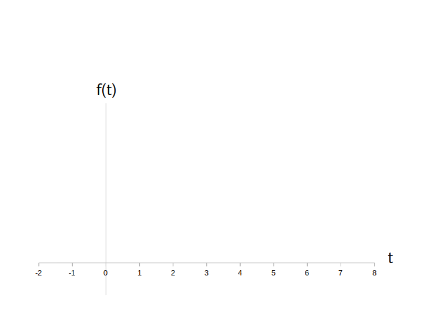
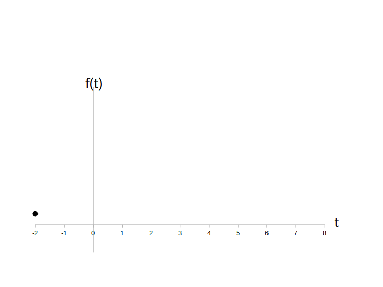
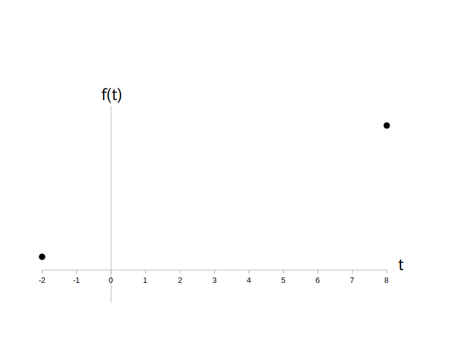
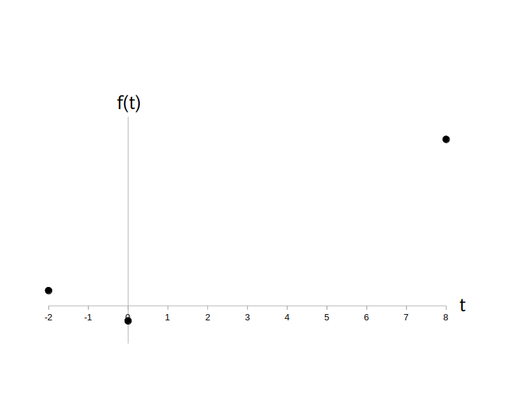
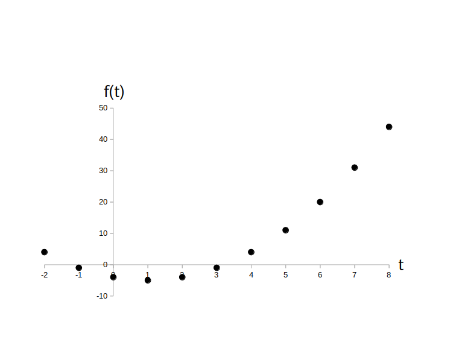
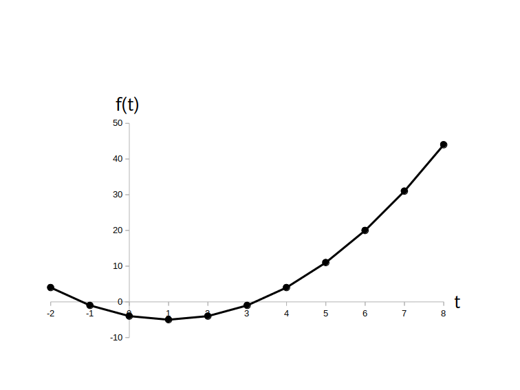
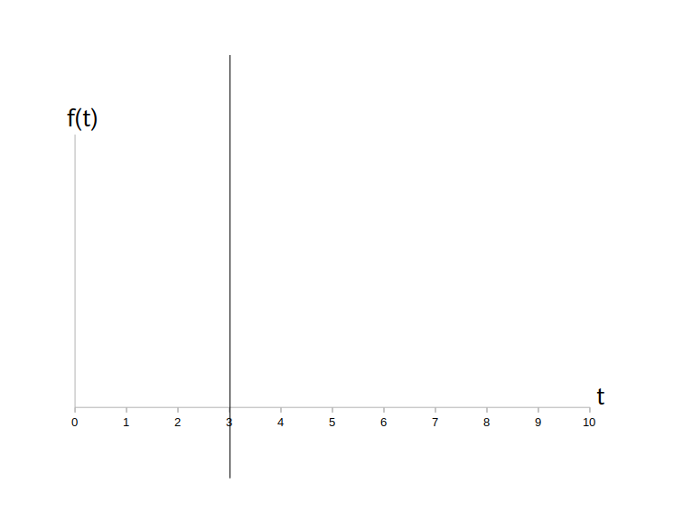

時間領域アナログ信号 $f(t)$ のグラフは表計算ソフトを使って描くことが多いですが、簡単な信号なら紙と鉛筆を使って描いたほうが早い場合があります。
ここでは例として
のグラフを、ステップに従って手描きしてみましょう。
時間領域アナログ信号 $f(t)$ の時刻 $t$ [秒]は連続量ですので、全ての時刻において $f(t)$ の値を求める事は不可能です。
そこでまずは適当に何点か代表となる点を描き、それらの点を滑らかな線でつなぐことでグラフを描くことにします。
そのためには、まず代表点を描くための時刻を決めます。
代表点の時刻には $t$ の最小値、最大値、(もし定義域に含まれていれば) $t=0$ を必ず含めます。
それ以外の時刻は適当に選んでも良いですが、間隔がまちまちだと分かりにくいので、なるべく等間隔になるように時刻を刻むことにします。
今回の例では $t$ の定義域が $-2 \leq t \leq 8$ ですので、$t=-2$ から $t=8$ まで等間隔 1 秒で刻んで
\[ t=-2,\ -1,\ 0,\ 1,\ 2,\ 3,\ 4,\ 5,\ 6,\ 7, \ 8 \]の 11 時刻を代表点を計算するための時刻とします。
次に紙を用意して横軸を描き、横軸の右に $t$ と記入します。
そして横軸の左端に $t$ の最小値、右端に $t$ の最大値を記入し、その間に適当な間隔(今回の例では 1 秒間隔)で数字を入れていきます。
次に縦軸を描きます。
$t=0$ の所で横軸とクロスさせ、そこを原点とします(もし $t=0$ が定義域に含まれていなければ右端、又は左端に縦軸を描きます)。
そのあと縦軸の上に $f(t)$ と記入します。
なお $f(t)$ の値域はこの時点ではまだ分からないので縦軸にはまだ数値は入れません。
負の値があるかどうかも分からないので取り敢えず負の方向にも線を引いておきます。
この時点では図1となります。

次にグラフの左端の適当な位置に代表点を描きます。
「適当な位置」と言われても困るかもしれませんが、$f(t)$の値域はまだ分かりませんので、最初の点は本当に適当な位置で良いです。
もし後で縦軸が短かい事が分かったら縦軸を伸ばせば良いだけです。
それで、今回の例では $t$ の最小値が $t=-2$ [秒]で
\[ f(-2) = (-2-1)^2-5 = 4 \]ですので図2の様にします。

次にグラフの右端に代表点を描きます。
今回の例では $t$ の最大値は $t=8$ [秒]なので
\[ f(8) = (8-1)^2-5 = 44 \]となりますが、今度は適当な位置に打っては行けません。
左端の代表点の高さが $f(-2) = 4$ でしたので、その 11 倍くらいの高さの位置に右端の代表点を打ちます(図3)。
もし縦軸の長さが足りなければ線を上に伸ばします。

次に時刻 $t=0$ [秒]の代表点を描きます。
もし $t=0$ が定義域に含まれてなかったり、左端か右端が $t=0$ ならこのステップは飛ばして結構です。
ですが、左端の代表点の高さが $f(-2) = 4$、右端の代表点の高さが $f(8) = 44$ だったことを考慮し、$t=0$ の下方の大体の高さの位置に目星をつけて代表点を打ちます(図4)。
もし縦軸の長さが足りなければ線を下に伸ばして下さい。

残りの時刻における代表点も順次計算して描いていきます。
全ての代表点を入れ終わると値域が分かりますので、最後に縦軸にラベルの数字を記入します(図5)。
ラベルの間隔は適当でも良いのですが、出来るだけ等間隔にした方が見やすくなります。

後は代表点の間を滑らかな線でつないで完成です(図6)。

時間領域アナログ信号では無いのですが、$a$ を任意の実数としたとき、直線
\[ t=a \]のグラフの描き方についても説明しておきます。
この直線は単に時刻 $t=a$ の位置から上下垂直に線を引くだけで描けます。
例えば直線 $t=3$ は下の図7になります。
なお直線 $t=0$ は縦軸そのものです。
